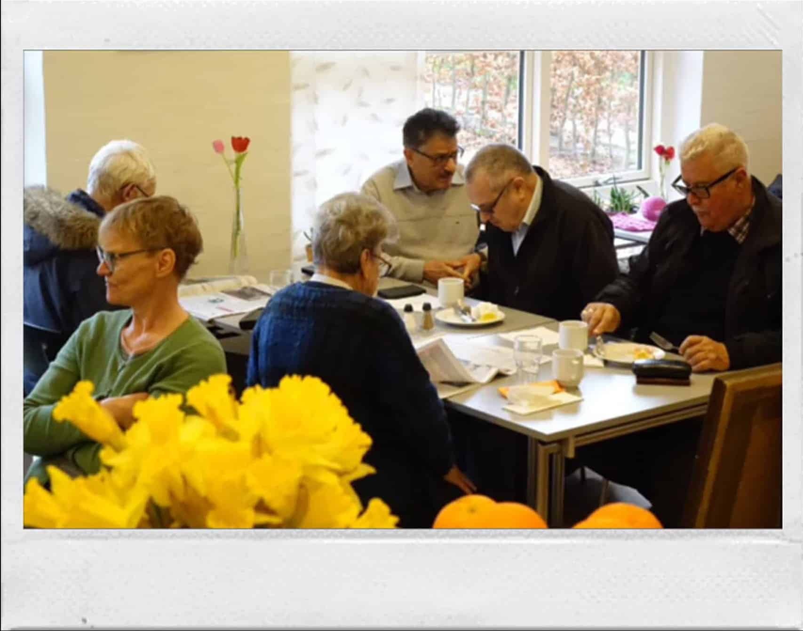

Om Café Parasollen
Café Parasollen er stedet hvor du kan komme som du er. Du kan drikke en kop kaffe, læse dagens avis eller møde andre mennesker. Men vigtigst af alt, så er der plads til alle uanset hvilke udfordringer man skulle stå imod. I caféen møder du accept og rummelighed.
I Café Parasollen ligger vi vægt på de gode, danske værdier. Vi går ind for gensidig respekt, en diakonal og social indsats der bidrager til at skabe værdige kår for udsatte mennesker.
Årsrapporter
Sociale væresteder er meget andet end blot et sted at være social. I årsrapporten fra Café Parasollen i Viby kan du læse, hvordan cafeen giver mennesker på kanten af arbejdsmarkedet nye muligheder. Hvordan mennesker, der af forskellige grunde står udenfor samfundets store fællesskaber, bruger cafeen som et fristed og pusterum.
Seneste årsrapport
Klik på billedet og det vil sende dig til vores seneste årsrapport gældende 2019-2020